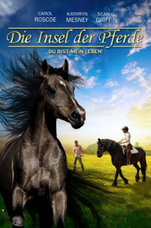

#7290 Die Insel der Pferde - Du bist mein Leben
Alternativ: The Dark Horse
 
 IMDB-Wertung: 5.3 / 10
IMDB-Wertung: 5.3 / 10  Metascore: 0
Metascore: 0 
The Dark Horse is a story of struggle and redemption. Dana, a ballet teacher, reluctantly returns to her childhood home to discover it is about to be sold. To save the farm, and the family, she must tame her mother's dangerous black horse, and ride him to victory in the year's biggest dressage competition.
Jahr: 2008
Dauer: 110 Minuten
FSK: 6
Land: USA Studio: KSMTonspuren: DTS - ,
Untertitel: Deutsch,
Auflösung: 1080p (1920x1080) Größe: 11980 MB
Genre: Drama, Familie, Sport
Regisseur: Cornelia Moore
Drehbuch: Cornelia Moore
Soundtrack:
Darsteller:
 Corina Boettger als Catrina
Corina Boettger als Catrina- Haynes Brooke als Finn
- Tallis Moore als Rees McSpadden
- Claire Vardiel als Clinic Doctor
- David Frederick White als Large Man
- Carol Roscoe als Dana
- Kathryn Mesney-Hetler als Gwen
- Sean G. Griffin als Fiach
- Scott C. Brown als The Sheriff
- Julian Curelop als Spectator
- Mark Dias als Martin
- Tiffany Tessa Doorn als Extra
- Peter Anthony Jacobs als Land Bank manager
- Eleanor Moseley als Cathy McSpadden
- Pam Nolte als Elizabeth
- Nathan Rice als Medic
Datei: X:\2008(G-M)\Insel der Pferde - Du bist mein Leben, Die (2008, FSK6, 1920x1080).mkv seit 13.10.2017
Festplatte: HD 2008(G-Z)-2009(A-F)
 Es gibt insgesamt 73 Filme in der Gruppe '2008(G-M)'
Es gibt insgesamt 73 Filme in der Gruppe '2008(G-M)'